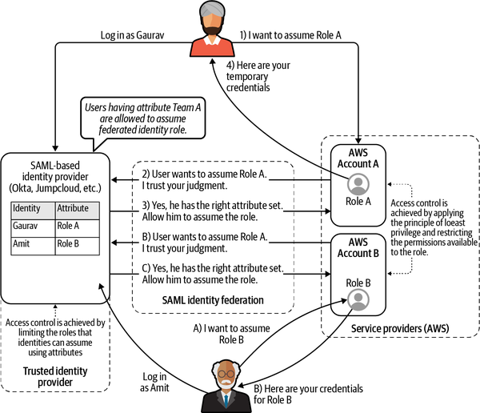
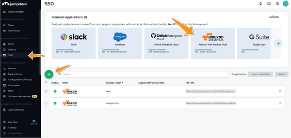
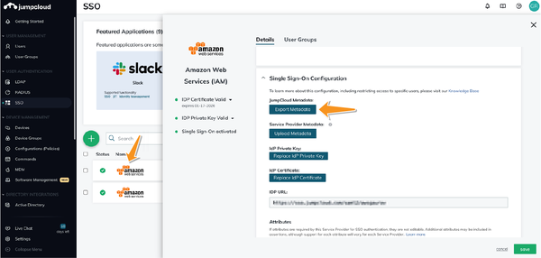
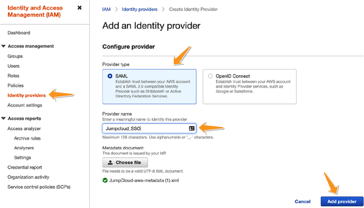
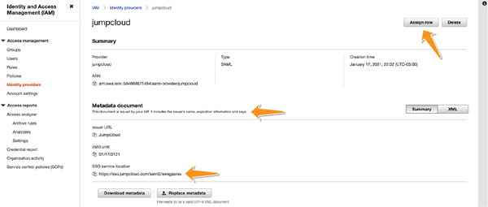
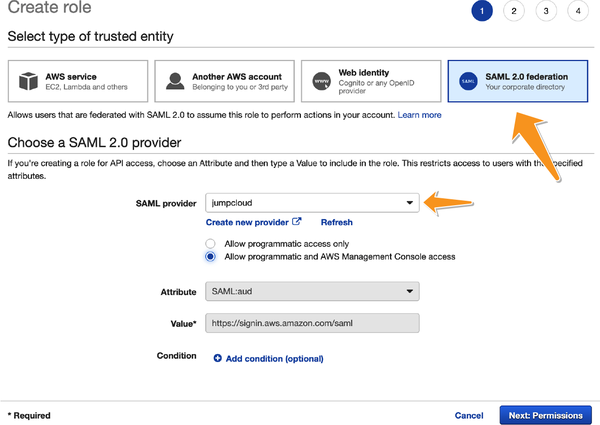
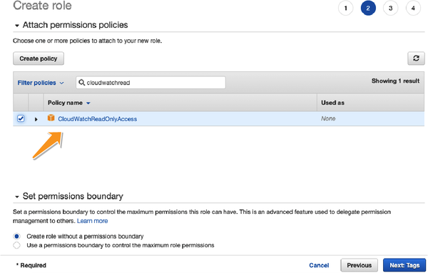
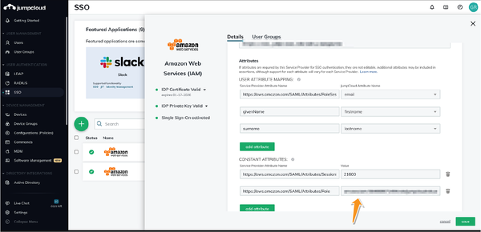
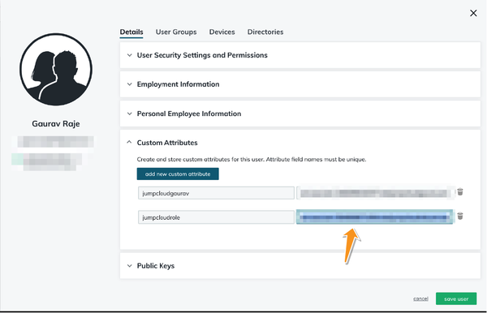

In most corporations, upon getting hired, employees typically register with a preferred system of choice, such as Active Directory for their corporate accounts. These companies require their employees to maintain strong security practices around securing their corporate accounts. In Chapter 8, I argued for the need to have individual AWS accounts per team with strong authentication. This means that the large corporations have to maintain multiple sets of identities: one for their corporate accounts within their identity management system of choice, and on top of this, identities within the multiple team-level AWS accounts. This brings about a significant rise in the complexity of management. This also makes it harder for companies to onboard, maintain, or terminate employee identities across all of these accounts.
To avoid such a scenario, security professionals recommend the use of federated identities (see Chapter 2). A federated identity is a portable identity that allows users to be authenticated across multiple systems without having to prove their identity multiple times.
AWS allows you to use any compatible identity provider (IdP) to manage the authentication aspect of identity management. Some popular IdPs include Okta, OneLogin, Ping Identity, JumpCloud, and others. Identity federation on AWS can happen using one of two identity federation standards: OpenID Connect (OIDC) or Security Assertion Markup Language (SAML). This appendix discusses how to implement federated identity management using an external IdP that I am personally familiar with, JumpCloud and AWS Identity and Access Management (IAM).
In doing so, we will look at using user attributes to control identities and then using role-based access control (RBAC), as discussed in Chapter 2. In a nutshell, the roles that each identity within JumpCloud can assume will be determined by the custom attributes that your JumpCloud administrator will add to these identities. More access can be granted by adding more custom attributes, and access can eventually be revoked by removing these attributes. All of these actions are performed using SAML.
Before you start setting up your AWS account, I will assume that you have set up a SAML IdP of your choice. This IdP will have all of the identities you wish to allow to authenticate against your AWS account. In case of my example, I will be using JumpCloud as my IdP of choice. However, you are free to use any SAML providers of your choice.
As a reminder from Chapter 2, the flow for identity verification will work something like what is outlined in Figure B-1.
If you want to simplify the process of single sign-on (SSO) using entitlements or group memberships, AWS SSO (introduced in Chapter 8) abstracts away and simplifies the process significantly. Because I am focusing on the attribute-based identities, I will be using AWS IAM for setting up federated identities for the purposes of this book.

This implementation will accomplish the following setup (explained in the next sections):
The first step toward setting up a federated identity-based authentication system is to configure your IdP to provide SAML-based authentication services to AWS. You may want to use your IdP to provide SSO services to items other than AWS, such as for your emails, partner accounts, and so on. On JumpCloud, this involves adding AWS as an SSO service to the JumpCloud account, as seen in Figure B-2.

After following the steps highlighted in Figure B-2, you will be able to create an application within your SSO. This step includes creating a page where AWS can redirect end users to a page (called a landing page) to authenticate against your IdP to prove their identity. You will be configuring AWS to trust the result of the authentication process that takes place on this landing page. In my case, I used the URL https://sso.jumpcloud.com/saml2/login-url. You can then fill out all relevant information and finish the wizard. At that point, your IdP account (JumpCloud) is willing to provide identity services to your service provider (AWS) that you just added.
Now that you have configured your IdP to accept incoming requests, you want to make sure that your AWS account trusts the identity services that are provided by your IdP. SAML prescribes the standardized steps that identity and service providers can use to establish this trust.
The first step in creating a trusted identity connection is to exchange certain metadata between the service provider (AWS) and the IdP (in my case, JumpCloud). This metadata includes information such as the authentication endpoints, cryptographic keys, and so forth.
In Figure B-3, I am exporting the metadata from my JumpCloud account so that I can import it into my AWS account in the next step.

As discussed in Chapter 2, on the AWS side, you have to create an IdP that allows you to import the SAML metadata from Step 3 into AWS, as shown in Figure B-4. This IdP inside AWS acts as a proxy for your external IdP (in my case, JumpCloud).

On the IAM page, click on the “Identity providers” tab, then click the “Add provider” button. Since JumpCloud is a SAML provider, you can choose SAML as the “Provider type” and upload the metadata.xml file that you exported in Step 2. Go through the wizard, and when you’re done, you will see your new IdP appearing in your list of identity providers.
This step completes SAML’s metadata exchange and enables AWS to trust your third-party IdP.
Now that you have your trusted IdP set up on your AWS side, you want to allow external identities to get granular permission to your AWS resources. You do this by allowing authenticated users to assume roles within your service provider (AWS) account, and then using RBAC for controlling access. To do that, you first need to create the role that you want these external identities to assume, as shown in Figure B-5.

Once these external identities have been authenticated against your IdP, their presence within your account will be in the form of an AWS role that you are creating. The onus is now on you to restrict this role using the PoLP discussed in Chapter 2.
The role-creation process and access control around roles are done through the AWS IAM console by going through the role-creation wizard, as seen in Figure B-6.
I assume you have already come up with the perfect AWS policy for this role. However, in order to have the right controls in place, it is important to use the PoLP to frame the security policies for this role. I have already discussed in detail the process to come up with the permissions for roles (see Chapter 2), and hence I will not go into the details here.

The access that your federated corporate users get through identity federation to resources will be determined by the access privileges that are assigned to this role, as seen in Figure B-7. In most large organizations, it is common to have multiple such roles per corporate user. Corporate users are then required to assume the correct role for the task they are currently performing.

Upon finishing the wizard, note the ARN of the role you just created, since this role will specify the access you have to your cloud infrastructure through the identity federation process.
Since you are using attributes-based identities, in the final step, you will need to copy back the ARN of your role into your IdP account so that it knows the role that the users will be attempting to authenticate for. (The role in JumpCloud is represented as <arn of your role, arn of your identity provider>) and added, as seen in Figure B-8.

You can control access to your cloud resources on AWS through the use of IAM permission policies, as highlighted in Step 4. Every user who wants to access cloud resources has to assume the roles that you created for specific purposes. However, you may not want everyone in the organization to have the ability to assume all the AWS roles you created. In technical terms, you may want to restrict the federation of identities on your IdP. In attributes-based IdPs, this can be achieved by using custom attributes that specify within the identity the roles that each user is allowed to assume. This way, a user is only allowed to assume certain roles that are described by the custom attributes, which are a part of their identity. Your identity administrator can set these attributes by applying the PoLP on all the identity accounts. Figure B-9 shows an example of custom attributes being set to specify the roles that a JumpCloud user can assume in my account.

Once this process is completed, you will be able to log into your AWS account by visiting your SSO URL that you bookmarked in Step 1.
Federated identities are great for managing identities at scale for large organizations. AWS IAM-based IdPs work best when working with identity management using user attributes, as discussed in this appendix. AWS SSO is another way of providing federated identities and controlling access if you want to do so based on a user’s membership in a group in a centralized directory service. AWS SSO also abstracts away some of the setup that I had to perform, while granularly granting access through custom attributes. For this appendix, I decided to stick with custom attributes since I believe they help in understanding identity federation more conceptually.